HIMX 与 CPO 光互连
一份“费曼小白”式的知识沉淀
从 IC 设计、驱动芯片，到 CPO、光栅耦合、WLO 潜望镜、COUPE 光引擎与供应链格局
导读
这份文档把我们围绕奇景光电（HIMX）与 CPO（共封装光学）展开的全部讨论，系统沉淀成一条有逻辑的知识链。它不按聊天先后顺序，而是重新梳理为六个部分：先讲清这家公司的底色（Part 1），再追问 CPO 这门技术为何会出现（Part 2），接着深入光如何进出芯片的“耦合”细节（Part 3），然后拆解关键零件与制造工艺（Part 4），再升到光引擎与整机结构（Part 5），最后落到供应链格局与投资视角（Part 6）。
讲解上坚持一个原则：先用大白话和比喻把“是什么、为什么”讲透，再上数据和术语；适合对比的内容用表格呈现；引用过的具体数据与事实，均在脚注标注来源。希望它既能当入门读物，也能当一份随时回看的速查手册。
目录
结语：一句话总览 17
第一部分 这家公司是什么：HIMX 的底色
1.1 IC 设计公司（Fabless）是什么
IC 是 Integrated Circuit（集成电路）的缩写，中文一般直接叫“芯片”。所以“IC 设计公司”就是芯片设计公司，关键在“设计”二字。
芯片产业链大致分三段：设计公司只负责“画图纸”——用软件设计芯片里几亿到上千亿个晶体管怎么排布、怎么连接，把功能逻辑设计出来，但自己不开工厂，把图纸交给晶圆代工厂（如台积电）去制造。这种“只设计不生产”的模式叫 Fabless（无晶圆厂）。作为对照：台积电是“代工厂”（只生产、不设计别人的芯片），三星、英特尔则是“设计+生产都自己做”的 IDM。
HIMX 就是一家 2001 年成立于台湾的 Fabless 公司1——动脑画图纸、把制造外包给代工厂的轻资产公司。
1.2 芯片的基本砖块：晶体管
要理解芯片，得先认识它最基本的零件——晶体管。一句话：晶体管就是一个“由电来控制的开关”。
普通的电灯开关靠手指拨；晶体管的妙处在于它靠另一股电信号来拨。给它的“栅极”通一点电，开关就接通、电流通过；不通电，开关就断开。这两个状态正好对应数字世界的 1 和 0。
“开关能控制开关”这件事是自动计算的根源：一个晶体管的输出可以去拨动下一个晶体管，于是成千上万个开关层层串起来，电路就能根据输入信号自动地开开关关，把运算做完。无数个 1/0 组合，搭出逻辑（与/或/非）、再搭出加减乘除、再搭出记忆与运算，最后就是一整台电脑乃至今天的 AI。
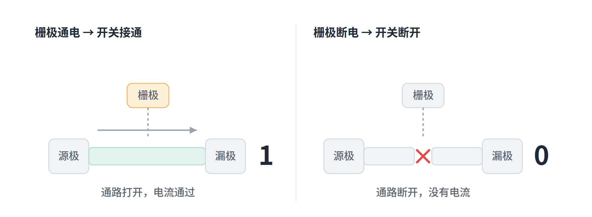
图 1 晶体管是“由电控制的开关”：栅极通电则导通（输出 1），断电则断开（输出 0）
两个收尾直觉：其一，现在的晶体管小到几纳米，一颗先进芯片里有几十亿乃至上千亿个，做得越小越密、算力越强，这就是“摩尔定律”和制程竞赛的核心；其二，它无处不在——驱动芯片、GPU、CPO 里的硅光芯片，底层最小的砖块都是晶体管。所谓 IC 设计，本质就是设计这几十亿个微型开关如何排布连线。
1.3 主业：显示驱动芯片（DDIC）
HIMX 的主业是“显示驱动芯片”（Display Driver IC，缩写 DDIC）。你手机、电脑、电视的屏幕由几百万个像素点组成，每个像素显示什么颜色、多亮，都需要有人去“指挥”——驱动芯片干的就是这件事：它接收主控芯片传来的画面信号，翻译成精确的电压电流，逐个控制屏幕上每个像素点亮、变色。
打个比方：如果屏幕是一支庞大的合唱团，驱动芯片就是那个指挥，决定每个人（像素）什么时候唱、唱多大声、唱什么音。没有它，屏幕就是一块亮不起来的黑玻璃。
这门生意稳定（有屏幕的地方就需要它），但“周期性强”——下游消费电子需求一波动，订单就跟着起伏，毛利也偏低（约 25–30%）2。这也是为什么市场长期不给它高成长估值；HIMX 真正被重估，靠的是下面要讲的那块和 AI 沾边的光学业务。
第二部分 问题的起源：为什么会有 CPO
2.1 AI 的“带宽墙”：800G→6.4T 到底是什么
CPO 的故事，得从一个数字阶梯说起：800G、1.6T、3.2T、6.4T。要先纠正一个常见误解——这些既不是功率，也不是功耗，而是“数据传输速率”，也就是带宽。单位是 bit/秒：800G = 每秒 800 吉比特，1.6T = 每秒 1.6 太比特，以此类推。G 是“吉”（十亿），T 是“太”（万亿）。每一代基本在前一代基础上翻倍。
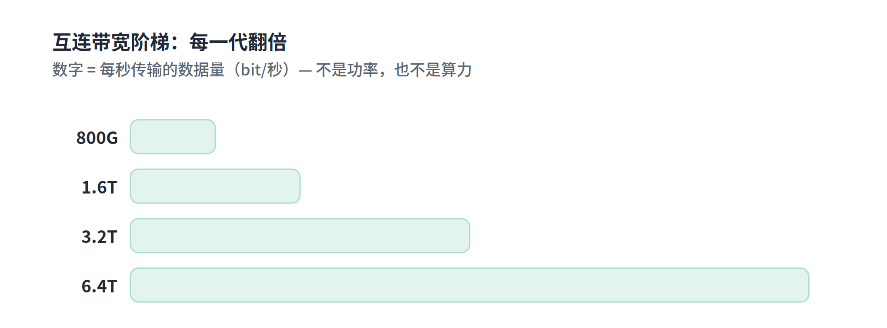
图 2 互连带宽阶梯：数字是每秒能传多少数据（bit/秒），越宽 = 数据管道越粗，每代翻倍
2.2 别搞混：带宽 vs 算力 vs 功耗
这里有三个极易混淆的概念，必须分清。带宽衡量的是芯片之间那根“数据管道”每秒能搬多少数据；算力衡量单颗芯片自己算得多快；功耗衡量耗多少电、发多少热。
| 概念 | 单位 | 衡量什么 | 在本主题里 |
| 带宽（传输速率） | bit/秒（800G、1.6T） | 数据管道有多粗 | 就是这些数字 |
| 算力 | FLOPS | 芯片自己算得多快 | 另一回事 |
| 功耗 | 瓦特（W） | 耗多少电、发多少热 | 推高带宽的代价 |
打个比方：800G→6.4T 就像高速公路从 2 车道扩到 16 车道，每秒能过的车（数据）多了 8 倍。但这不代表车开得更快（算力），也不是收费站电费（功耗）——单纯是路更宽、吞吐量更大。
2.3 铜线的极限：功耗为什么成了瓶颈
AI 训练要在成千上万张 GPU 之间疯狂搬数据。管道不够粗，GPU 就会“吃不饱”、空等数据，再强的算力也发挥不出来，所以大家拼命把带宽往上翻。但问题来了：当你用铜线（电信号）去推这么大的数据量时，速率每翻一倍，铜线的耗电、发热、信号衰减就急剧恶化。推到 1.6T、3.2T 这个量级，铜线基本就撞墙了——再快，电费和散热扛不住，信号也跑不远。这就是所谓的“电连接瓶颈”。
因果链是：带宽要翻倍 → 用铜线传太费电发热（功耗暴涨）→ 铜的物理极限撑不住 → 改用光来传（光纤几乎不耗电、不衰减）。于是 CPO 成了下一代互连的必经之路。
2.4 CPO 的解法：把光引擎搬到芯片旁
CPO（Co-Packaged Optics，共封装光学）干的事很朴素：把“电变光”的那个转换器（光学引擎），从老远的板子边缘，搬到紧挨着主芯片的地方，和它打包在同一块封装基板上。
传统方式（可插拔光模块）里，主芯片算完，电信号得扛着数据横穿整块电路板（十几厘米），一路跑到板边的光模块才转成光。那段长跑就是瓶颈。CPO 则在主芯片旁边就地建“光转换站”，电信号只走两步、立刻转成光上“高铁”，于是省电、不发热、还能跑更高带宽。
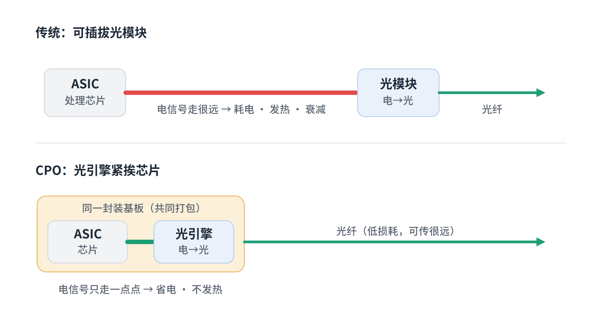
图 3 传统可插拔 vs CPO：CPO 把光引擎挪到芯片旁，电信号只走一点点就转成光
一句话记住 CPO：把它想成“在产房旁边直接盖产科病房”——电信号一出生就近转成光、立刻上车，不用再被推着穿过整栋楼。光学引擎与 ASIC 共封装在同一基板上，就是 CPO 的全部精髓。
OIF 的官方定义其实说的就是这件事：用硅光子技术（把光路做在芯片上的工艺），把光学模块与交换 ASIC 在“最小所需面积内”装到同一块基板上——“最小面积”= 挨得最近 = 电信号路径最短。
第三部分 光是怎么进出芯片的：耦合的艺术
3.1 先懂“耦合”与“耦合效率”
“耦合”（coupling）字面上讲的就是两个东西对接、配上对，把能量从一方传到另一方——它天生描述“两者之间”的关系。关键在于：光在光纤内部、在芯片内部传播时损耗都很小，真正大量漏掉的地方，是两个元件“交接”的那个界面（比如从光纤把光送进芯片入口的一瞬间）。只要对不齐、有缝隙、角度不对、光斑不匹配，光就在这个交接口漏掉了。
所以衡量“光利用率”，本质上衡量的就是这个交接环节做得好不好——这就是为什么它叫“耦合效率”而不是“传输效率”。
就像接力赛跑：运动员（光）自己跑得飞快、几乎不损失，真正决定成败的是交接棒那一下。棒递得干净利落几乎不掉速；手忙脚乱就丢棒掉速。耦合效率衡量的就是这个交棒动作有多干净。
一个能印证的细节：芯片上接收光的部件叫“光栅耦合器”——名字里就带着“耦合”，因为它的本职就是负责光纤与芯片之间的光“对接交接”。
3.2 光栅耦合器：让光从芯片表面冒出来
光在芯片内部，是被关在一条极细的“光管道”（波导）里、横着贴着表面跑的。怎么让它拐头朝上、从芯片表面射出去？光栅耦合器就是这个“出光口”——它本质上是芯片表面刻出来的一排等间距微小凹槽，像一小块搓衣板。
当横着跑的光经过这排凹槽时，每一条凹槽都把一小撮光“踢”向斜上方。单条很弱，但凹槽的间距是精确按光的波长算好的，于是每条踢出去的光波步调完全一致（同相位），无数个微弱的“向上一踢”整整齐齐叠加，就合成了一束又强又集中、朝上射出的光。
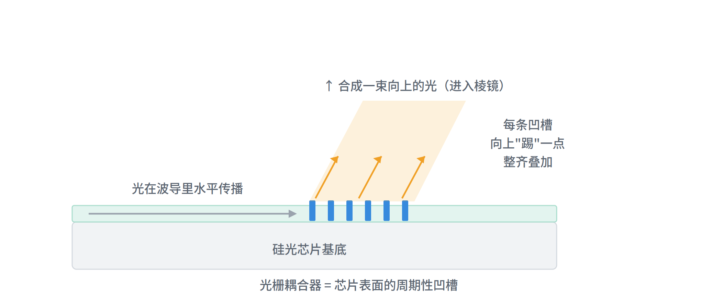
图 4 光栅耦合器：芯片表面的周期性凹槽把水平跑的光逐级“踢”向上方，同相叠加成一束射出
你其实见过光栅：CD/DVD 光盘表面那圈彩虹，就是因为盘面刻满了等间距细密纹路，把白光按波长分了方向。原理是同一个。
为什么 CPO 偏要用这种“从表面出光”的方式？两个原因：一是光从顶面出来，可以在晶圆切开前就测试；二是不占用芯片侧边（侧边在 CPO 里被电气连接占满了）。
3.3 微透镜阵列：聚焦与对准
微透镜阵列就是一大片排列整齐、肉眼几乎看不见的微型透镜，每个小到微米级。它干的活，是改善上面说的那个“交接”：把光纤里发散的光先聚好、对准，再精准送进芯片入口，让交接口上漏掉的尽量少——于是耦合效率（光利用率）大幅提高。
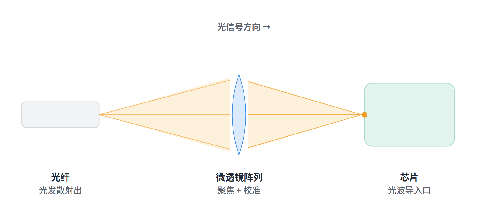
图 5 微透镜阵列把光纤发散的光聚焦、校准后，精准送入芯片的光波导入口
它由 HIMX 用纳米压印工艺（详见 4.1）在玻璃晶圆上批量制造，量产成本低、精度高、一致性好——这正是它能卡位的核心本事。
3.4 45° 棱镜潜望镜：把光拐 90°
光从光栅垂直朝上射出，可光纤是横躺在旁边的，方向对不上，需要把向上的光拐成水平（拐 90°）。靠的是一块切了 45° 斜面的小玻璃，原理是“全反射”。
当光在玻璃内部传播、撞到玻璃与空气的交界面时，如果撞击角度够斜（对玻璃约超过 42°），光不会穿出去，而是 100% 被弹回来——像一面完美的镜子，且不需要任何镀层。45° 恰好超过这个临界角，所以光一撞上 45° 斜面就被干净地全部反射。几何上，一束垂直向上的光撞在 45° 斜面上，反射出去正好变成水平，差 90°。
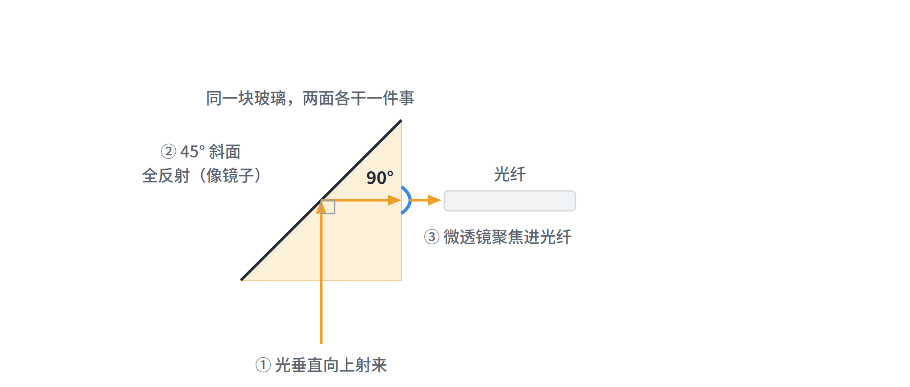
图 6 45° 棱镜潜望镜：向上的光经 45° 斜面全反射拐 90° 变水平，再经微透镜聚焦进光纤
这其实就是潜水艇潜望镜的原理：潜望镜里装着 45° 镜子，海面的光水平射进来、撞上镜面拐 90° 朝下送到你眼睛。HIMX 这块小玻璃做的是一模一样的事，只是把“镀银镜子”换成了“靠全反射的玻璃斜面”——所以它被叫做“微型光学潜望镜”。
妙处在于：同一块玻璃，一面是 45° 棱镜（负责拐 90°），另一面是微透镜阵列（负责聚焦对准），两件事一次干完。
3.5 两条耦合路线：边缘 vs 光栅
其实把光从光纤送进芯片，不止“微透镜阵列”这一种方式。业界主要有两大家族：边缘耦合（光纤对准芯片侧面边缘、水平怼进去）和光栅耦合（光从芯片顶面垂直进出）。微透镜阵列只是“光栅耦合”这条路线里的一个必需零件。
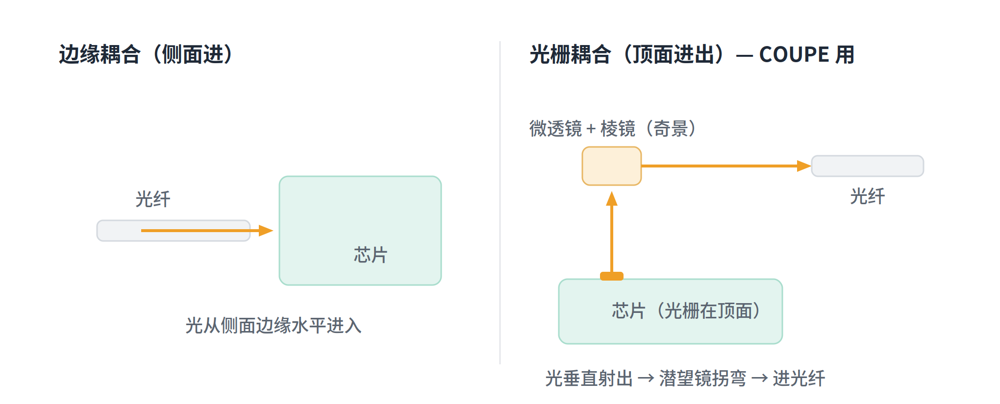
图 7 两种耦合几何：边缘耦合从侧面水平进；光栅耦合从顶面垂直进出（COUPE 走这条路）
两者各有优劣，列成表对照：
| 维度 | 边缘耦合 | 光栅耦合（COUPE 选用） |
| 单点光损耗 | ✓ 低 | ✗ 较高 |
| 占用芯片边缘 | ✗ 需要（已被电气占满） | ✓ 不用，走顶面 |
| 通道密度 / 扩展 | ✗ 1D 边缘，有限 | ✓ 2D 表面，能堆很多 |
| 晶圆级测试 | ✗ 要先切割抛光 | ✓ 可以 |
| 量产可制造性 | ✗ 对齐苛刻 | ✓ 较易，可自动化 |
3.6 为什么明明损耗更高还选光栅（量产取舍）
从上表看出来：边缘耦合只赢在“单点损耗”这一项，光栅耦合在其余几乎所有维度都占优。原因是 CPO 里芯片边缘已被海量电气连接占满（没地方留给光纤水平进）；光栅走顶面这块“空地皮”，还能用 2D 表面堆出远多于 1D 边缘的通道；又能在晶圆切开前就逐颗测试，省掉坏品浪费；也更适合自动化、晶圆级的大批量生产。
损耗略高怎么办？它落在系统预算之内，工程上也能往下压；而前面那块 WLO 玻璃（微透镜+棱镜）存在的意义之一，正是把这条路上的损耗尽量补救回来。所以这是“用一点可控的损耗，换来巨大的可制造性与可扩展性”。
这背后是一条贯穿半导体行业的通用规律：在大规模量产的世界里，“能不能稳定地造出几百万套”（可制造性、可测试性、可扩展性）往往比“单件性能最优”更重要。边缘耦合是“实验室最优”，光栅耦合是“工厂最优”。
第四部分 关键零件与制造工艺
4.1 WLO（晶圆级光学）：HIMX 的看家工艺
WLO = Wafer-Level Optics，晶圆级光学。理解它的关键不在“光学”，而在“晶圆级”——它讲的其实是一种制造方式。传统做光学元件是单件加工，像老师傅一片一片磨镜片，慢、贵、一致性差。WLO 借用半导体思路：在一整片玻璃晶圆上，用模具一次性批量“复制”出成千上万个微型光学元件，再切开。
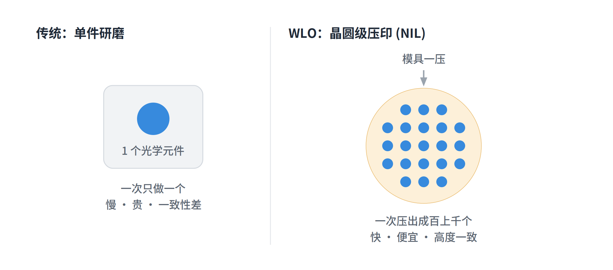
图 8 “晶圆级”的含义：传统单件研磨一次一个，WLO 用纳米压印一次压出整片晶圆上百上千个
HIMX 用的是 NIL（纳米压印）：拿刻好凹凸的模具，往涂了光学胶的玻璃晶圆上一压、固化成型。妙的是它能在玻璃的一面压出微透镜阵列、另一面压出 45° 棱镜，一次成型、两面对齐——这正是 3.4 里那块“潜望镜玻璃”的来历。
4.2 NIL 与 know-how：护城河的真相
一个常被误解的点：纳米压印（NIL）本身并不是 HIMX 独有的。佳能、EVG、SUSS MicroTec 等设备厂都对外出售 NIL 设备，工艺在业界早已广泛使用；HIMX 自己的 NIL 设备当年也是向 EVG 买的3。
那它凭什么卡位？真正的壁垒在于 know-how。know-how 指的是“实际做出来的本事”——那种靠长期动手积累、写不进说明书、外人短期学不会的实操经验和窍门，区别于“知道原理”（know-why）。
打个比方：菜谱（原理）网上全有，但同一份菜谱，大厨做出来和你做出来天差地别——那个差距就是 know-how，藏在“火候”“手感”“盐少许到底多少”这些只能靠日复一日练出来的地方。
HIMX 的护城河，是“15 年以上的 WLO 量产良率经验 + 把透镜块与 V 槽底板两半都自己压、保证对齐的整合度 + 拿到 COUPE Gen1&2 独家供应资格”三层叠加。换句话说，它是“经验型卡位”而非“专利型垄断”——好处是别人短期追不上（要靠时间熬），隐患是它不像专利那样有法律独占，理论上别人肯花同样年头踩坑，终究有可能追平。
4.3 微环调制器（MRM）与外部激光源（ELSFP）
要让光承载数据，需要两样东西配合：一个稳定的光源，和一支在光上“写字”的笔。
外部激光源（ELSFP）是光源。它发出的是一束稳定不变的光（像一支一直亮着、纹丝不动的手电筒），里面没有信息。它之所以是“外部”的、还单独做成可插拔模块，是因为激光器又烫又娇贵——塞进滚烫的封装里会伤性能和寿命，坏了还会拖累整块昂贵封装；所以把它挪到封装外凉快处发光，再用光纤把“原始稳定光”送进芯片。
微环调制器（MRM）是那支“写数据的笔”。它是一个极小的环形光路，紧挨主光道；加上电信号，就能在特定波长上控制光“通过还是不通过”，相当于一个超高速光开关，把数据 0/1 一位位刻进光里。台积电用的是 200G 级别的微环调制器4。
类比：激光是一股稳定的水流，微环调制器是一个飞快开关的水龙头，靠“通—断—通—断”打出摩斯电码，数据就这么写进了光里。而把发热的“发电机”（激光）放远点、只把生光管道接进来、动脑的活留给凉快芯片，正是 ELSFP 的设计逻辑。
4.4 FAU（光纤阵列单元）：光进出的总闸口
FAU = Fiber Array Unit，光纤阵列单元。拆开看就是：“把一排光纤整整齐齐排好、再封装成一个能直接用的整体模组”。因为你不可能拿一根根松散的光纤手工怼到芯片上——几十根必须排得笔直、间距精确、每根都对准它该对的光点，还得把光拐弯、聚焦好，所以要先在外面组装成一个整体，再整块装上去。
最好理解的类比：FAU 就是一个多芯的精密“光接口插头”——像 USB / HDMI 接头的光学、微米精度版，而且这个接头里还内置了拐光、聚光的光学元件。插到芯片上，光就能在“光纤世界”和“芯片世界”之间干净地穿过去。
拆开一个 FAU，里面有三样：一排光纤；一块 V 槽底板（刻着平行 V 形小沟，每根光纤往一道沟里一放就被固定得笔直、间距精确，像蛋托卡住一个个蛋）；以及那块 WLO 潜望镜玻璃（45° 棱镜 + 微透镜阵列）。HIMX 做里面的光学内脏，FOCI 把这些零件加光纤组装成完整 FAU。它是光纤世界与芯片世界唯一的交界口——前面讲的耦合、损耗、拐弯、聚焦全浓缩在这一小块上，所以它做得好不好，直接决定整套 CPO 跑不跑得通。
第五部分 光引擎与整机结构
5.1 COUPE 光引擎：EIC 叠 PIC
COUPE = Compact Universal Photonic Engine，紧凑型通用光子引擎，是台积电的硅光子平台。关键词是 Engine（引擎）：就像汽车引擎把汽油转换成动力，COUPE 这台光引擎干的是把电信号转换成光（以及反过来）。前面讲 CPO 时“被挪到芯片旁的那个光学引擎”，具体就是它。
一台光引擎需要两种芯片配合：光子芯片（PIC，管光的一半，上面有调制器、波导、光栅耦合器、光电探测器）和电子芯片（EIC，管电的一半 / 驱动大脑，负责驱动控制光子元件）。
台积电的杀手锏是：不把两块芯片并排放，而是把电子芯片直接叠在光子芯片正上方，用铜对铜的无凸点键合（SoIC-X）面对面焊死。这么一叠，两者间的电路被压到极短（亚 10 微米），电阻、损耗、延迟都大幅下降。台积电号称这带来约 5–10 倍能效、10–20 倍更低延迟，路线图指向 12.8 Tbps5。这和最早讲 CPO 的逻辑一模一样：缩短电路、省电降耗，只是这次用在了引擎内部两块芯片之间。
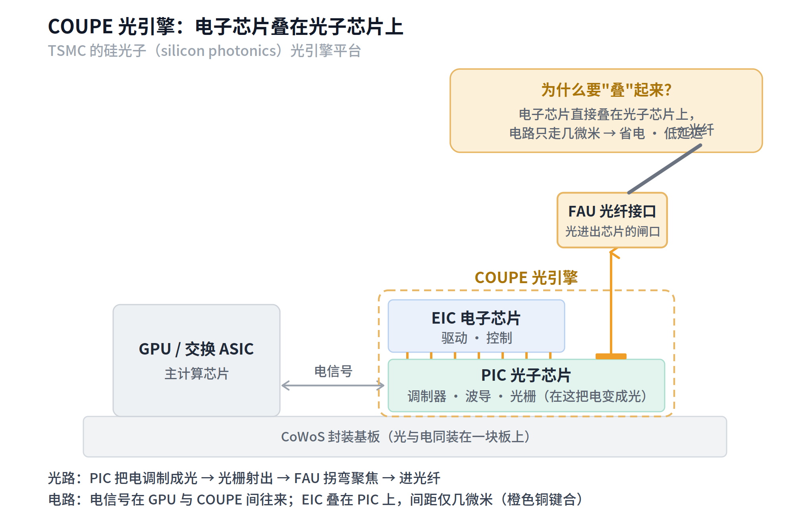
图 9 COUPE 光引擎剖面：电子芯片 EIC 叠在光子芯片 PIC 上，铜键合让电路极短；光经光栅射出、过 FAU 进光纤
进度上：第一代计划 2026 下半年量产、AMD 首发；第二代约 2027 末–2028，NVIDIA 的 Rubin Ultra 很可能首用；NVIDIA 已公布的 Spectrum-X、Quantum-X Photonics 交换平台用的就是 COUPE6。
5.2 CPO 模块物理结构全解
把前面所有零件按真实物理位置摆在一起，就是一个完整的 CPO 模块。它装在同一块封装基板上，包含：交换 ASIC（主控/计算芯片，如 NVIDIA Quantum-X）、光学引擎 SiPh PIC（上面有微环调制器）、FAU（含微透镜阵列、棱镜准直器、V 槽底板）、外部激光源 ELSFP，以及进出的光纤；ASIC 与光引擎之间是 5cm 以内的短距电气连接。
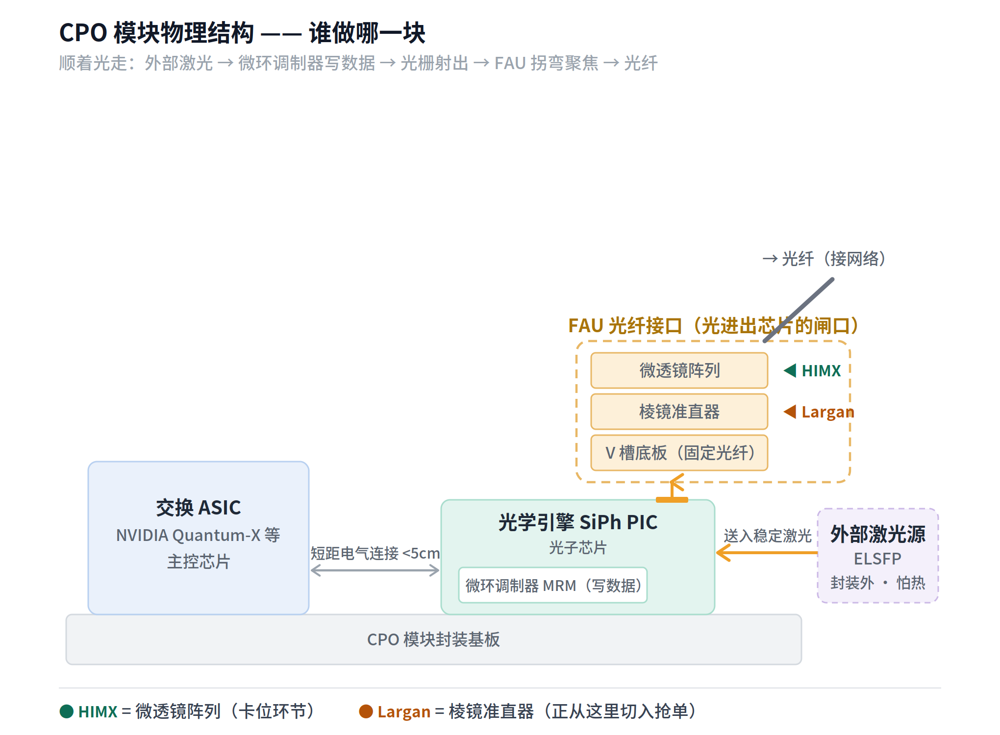
图 10 CPO 模块物理结构：各零件的真实位置与供应商分工（HIMX 卡微透镜、Largan 从棱镜准直器切入）
把整张图当成一条“光的一生”来读就全活了：外部激光源发出稳定的光，用光纤送进 PIC → 微环调制器把数据 0/1 飞快写进光里 → 光跑到光栅耦合器被“踢”成一束朝上 → 进入 FAU：先被棱镜准直器拐弯捋直、再被微透镜阵列聚焦对准，V 槽底板把光纤固定好 → 最后干净地钻进光纤奔向数据中心。整个过程由旁边的交换 ASIC 通过短距电气连接驱动。
注：报告把“棱镜准直器”标为“Largan 切入点”。“准直”就是把发散的光捋成一束平行笔直的光；大立光（Largan）正想从这个环节切进来抢 HIMX 的单7。在 HIMX 的实际设计里，微透镜和棱镜本是同一块玻璃，报告这里是按功能拆开标注。
第六部分 供应链与投资视角
6.1 全链分工与脉络
把这一路的概念收成一张图，顺着箭头看一遍就是完整脉络：HIMX 是一家只设计不生产的 IC 设计公司，手里两摊生意——主业驱动芯片（稳定但不性感），副业 CPO 光学元件（高毛利、估值核心）；副业之所以存在，是因为 AI 带宽墙逼出了 CPO；光在 CPO 里的旅程是“光栅耦合器 → WLO 潜望镜 → 进光纤”，HIMX 正卡在中间那个潜望镜环节；最后落到一个很现实的量产取舍，以及它“经验型卡位、非专利垄断”的护城河性质和 Gen3 二供风险。
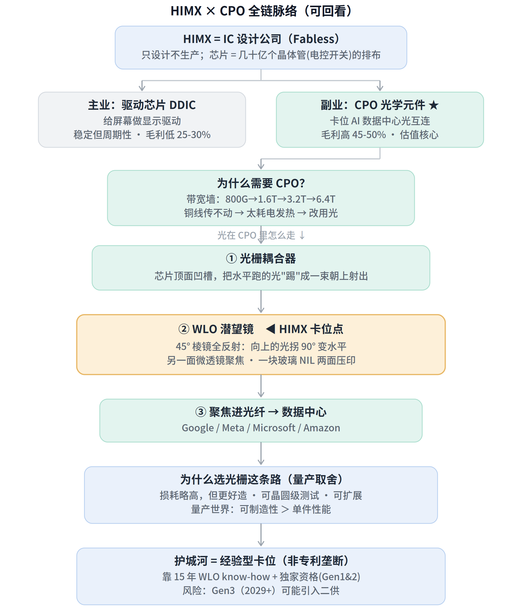
图 11 HIMX × CPO 全链脉络：从公司底色到护城河与风险的一张总览图
整条链的角色分工：HIMX（做光学零件）→ FOCI（组装成 FAU）→ TSMC（装进 COUPE 光引擎）→ NVIDIA（装进 AI 系统）→ 卖给数据中心。
6.2 FOCI 与它的对手 TFC
FOCI 全称 Fiber Optic Communications（台湾柜买代码 3363），是这条链里和 HIMX 配对的“组装总成厂”：把 HIMX 的光学零件加上光纤，在微米级精度下组装成完整的 FAU、并设计好它怎么对接 COUPE。它的看家技术叫 ReLFACon（可回流焊的带透镜光纤阵列连接器）。HIMX 持有 FOCI 约 5.3% 股权、两家深度绑定；FOCI 是 COUPE Gen1&2 的独家 FAU 供应商，已募资约 1 亿美元备产，并握有独立的 FAU 结构专利8。
盖房子的比方：HIMX 是烧砖、做预制构件的厂；FOCI 是拿这些构件加光纤、精密吊装对齐成可交付模块的总包施工方。砖再好，没人精准砌成楼也白搭——FOCI 干的就是“砌成楼”这一步。
市场对它的关注甚至更高：FOCI 股价年内一度上涨约 167%、市值约 20 亿美元，大摩估其 FAU 业务到 2028 年营收可达约 200 亿新台币9。但有两个风险点值得盯紧。其一，FOCI 自己不依赖 HIMX（握有独立 FAU 专利），可反过来 HIMX 高度依赖 FOCI——它的光学零件几乎都得通过 FOCI 的 FAU 出货，FOCI 出问题或丢份额会连累 HIMX。
其二，更现实的是 FOCI 正面临强劲对手 TFC（天孚通信，深市 300394）。TFC 提供“透镜阵列 + FAU + 封装”的一站式套件、量产规模更大（苏州、东南亚都有大厂），被指在 CPO 商业化落地上反超 FOCI；而 FOCI 主要专注 ReLFACon 与 FAU、需客户再对接多家供应商10。当 CPO 从“实验室”走向“大规模量产”时，能不能稳定交付几百万套比实验室级精度更要命——这正是 3.6 里那个量产取舍逻辑，只不过这次砍向了 FOCI 自己，并会顺着供应链传导回 HIMX。
6.3 HIMX 的护城河与风险清单
把投资视角收个口。HIMX 的卡位是真的、毛利也是真的，但它的护城河同时依赖“商业关系”和“一个特定的技术路线选择”，两者任何一个松动，逻辑都会受影响。主要风险有三条：
其一，二供风险：所谓“独家”只覆盖到 Gen2（约 2026–2028 量产期），Gen3（2029+）有可能引入第二供应商。其二，架构路线风险：HIMX 的价值绑定在“COUPE 选了光栅耦合”这条路上；若未来某代转向边缘耦合或别的方案，这个微透镜卡位可能被整条绕过。其三，竞争切入风险：Largan 正从“棱镜准直器”环节切入抢 HIMX 的单，TFC 则在 FAU 层面反超 FOCI 并传导回 HIMX。
一个有用的对照是把它和台积电放在一起看——同在这条链上，护城河的深度和确定性并不一样：
| 公司 / 环节 | 护城河类型 | 强度与风险 |
| 台积电（COUPE） | 地基级硬整合：唯一能把先进电子逻辑 + 成熟光子工艺 + 先进封装整合进同一堆叠的代工厂 | 深、确定性高 |
| HIMX（微透镜） | 卡位级软垄断：靠 15 年 WLO 经验 + 客户绑定 + 独家资格 | 较软，依赖关系/路线/时间窗口 |
这也解释了为什么市场对 HIMX 既给溢价、又始终带着对“Gen3 二供”“被 Largan/TFC 蚕食”的警惕。它卖的，本质上是“让这套不那么完美、但能大规模造的方案真正跑得通”的关键一环——价值真实，但需要你持续盯紧上面那几个变量。
结语：一句话总览
晶体管是开关 → 开关拼出芯片；AI 的带宽墙逼出了 CPO；CPO 里光要进出芯片，靠光栅耦合 + WLO 潜望镜 + 微透镜；台积电的 COUPE 是那台核心光引擎，HIMX 与 FOCI 卡在给它接光、组装 FAU 的环节。整条逻辑链的价值与风险，都浓缩在“谁，在哪一格，护城河有多深”这一个问题里。
（本文为基于公开信息与对话讨论的知识整理，非投资建议。涉及的具体数据请以脚注所列来源及各公司最新公告为准。）
奇景光电（Himax）公司概况：2001 年于台湾台南成立，采无晶圆厂（fabless）模式，约 2,200 名员工。来源：Himax 官方资料 himax.com.tw。↩︎
毛利率对比（驱动芯片约 25–30%，CPO 光学元件约 45–50%）引自本主题对话所依据的研报内容。↩︎
纳米压印（NIL）并非 HIMX 独有：佳能、EVG、SUSS MicroTec 等均商业化出售 NIL 设备；HIMX 自身的 NIL 设备亦购自 EVG。其真正壁垒为自 2000 年代末积累的逾 15 年 WLO 量产良率经验。来源：photoncap.net、EV Group 新闻稿（2012）。↩︎
台积电 COUPE 的 PIC 上集成先进的 200G 微环调制器（MRM）。来源：TrendForce（SEMICON Taiwan 2025 报道）。↩︎
COUPE 以 SoIC-X 把电子芯片（EIC）叠在光子芯片（PIC）上；台积电称其带来约 5–10 倍能效、10–20 倍更低延迟，路线图指向 12.8 Tbps。来源：IDTechEx、TrendForce、Tom's Hardware（2024–2026）。↩︎
COUPE 第一代预计 2026 下半年量产、AMD 首发；第二代约 2027 末–2028，NVIDIA Rubin Ultra 可能首用。HIMX 为 Gen1&2 独家微透镜阵列供应商，FOCI 独家供应 FAU。来源：Digitimes 引天风证券、photoncap.net（2026）。↩︎
大立光（Largan，台股 3008）被报道与台积电合作供应 CPO 光学元件、定位为 HIMX 的潜在替代，并就某 AMD 项目送样；HIMX 同日发声明称与 FOCI 合作维持不变。来源：Hunterbrook、台湾经济日报（2026.01）。↩︎
FOCI（Fiber Optic Communications，台湾柜买代码 3363）负责将 HIMX 的光学元件组装成 FAU，核心技术为 ReLFACon；HIMX 持有 FOCI 约 5.3% 股权，FOCI 另募资约 1 亿美元备产，并握有独立的 FAU 结构专利。来源：郭明錤 Medium（2024.12）、Hunterbrook、photoncap.net。↩︎
FOCI 股价年内一度上涨约 167%，市值约 20 亿美元；摩根士丹利估其 FAU 业务到 2028 年营收可达约 200 亿新台币。来源：CommonWealth（english.cw.com.tw，2026.04）、Morgan Stanley。↩︎
TFC（天孚通信，深市 300394）提供透镜阵列+FAU+封装的一站式套件、量产规模更大，被指在 CPO 商业化落地上反超 FOCI。来源：FundaAI（2026.03）。↩︎